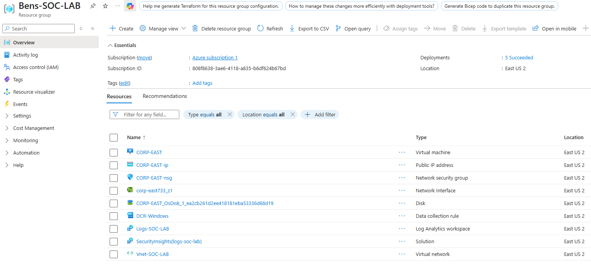
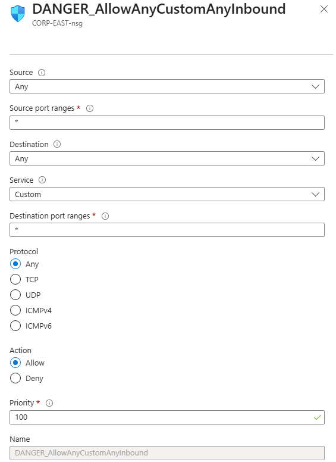
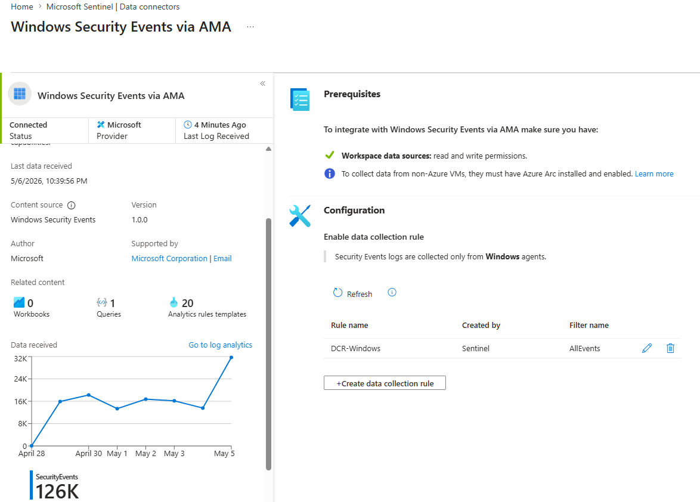
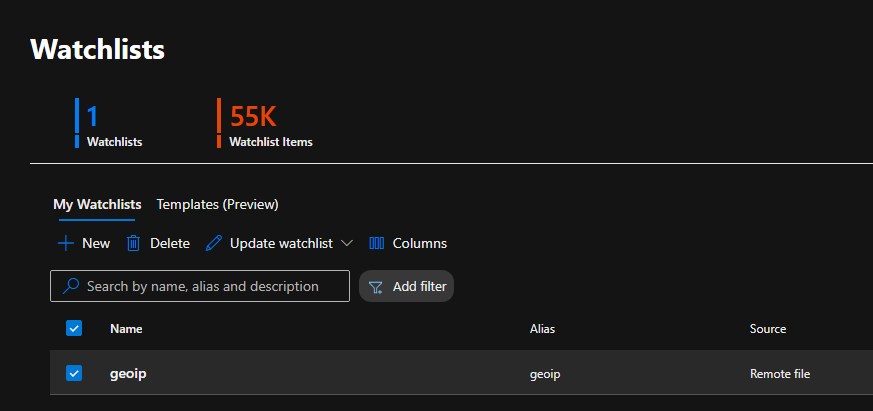
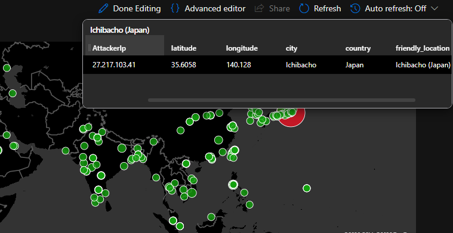
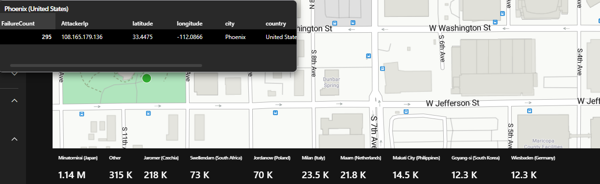

Deploy the Resource Group
Provisioned a dedicated Azure Resource Group (Bens-SOC-LAB) containing every component of the lab: a Windows virtual machine, public IP, network security group, virtual network, Log Analytics workspace, and the Sentinel solution — all deployed to East US 2.

Expose the VM with a Permissive NSG Rule
Created a custom inbound rule on the network security group — DANGER_AllowAnyCustomAnyInbound — allowing any source, any port, any protocol at priority 100. This intentionally removes the perimeter so the VM attracts real-world scanning and brute-force traffic from the internet.

Connect Sentinel with a Data Collection Rule
Configured the Windows Security Events via AMA data connector in Microsoft Sentinel with a custom Data Collection Rule (DCR-Windows, AllEvents filter) to stream the VM's security event logs into the Log Analytics workspace. Ingestion ramped quickly — 126K+ security events collected within the first week.

Import a Geo-IP Watchlist
Loaded a 55,000-item geo-IP watchlist into Sentinel from a remote file. This maps attacker IP addresses to latitude, longitude, city, and country — the enrichment layer that makes attack-origin analysis and mapping possible in KQL.

Build the Attack Map Dashboard
Wrote a custom KQL query joining failed logon events against the geo-IP watchlist, then rendered it in a Sentinel Workbook as a world map. Every dot is a real attacker location; the leaderboard below the map ranks origins by volume — topped by 1.14M failed attempts from a single location in Japan.

Drill Into the Enriched Log Format
Each map point resolves to structured, enriched fields: attacker IP, coordinates, city, country, and a friendly location label — the output of the KQL join between raw security events and the watchlist.

Trace an Individual Attack Source
Zooming into a single source: one Phoenix-based IP generated 295 failed logon attempts against the honeypot. The map resolves down to street level, demonstrating the full pipeline — raw Windows event → Sentinel ingestion → watchlist enrichment → actionable, geolocated intelligence.
